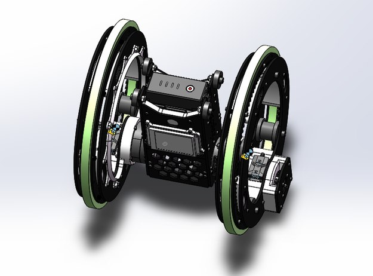
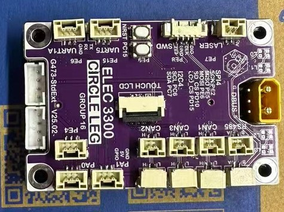
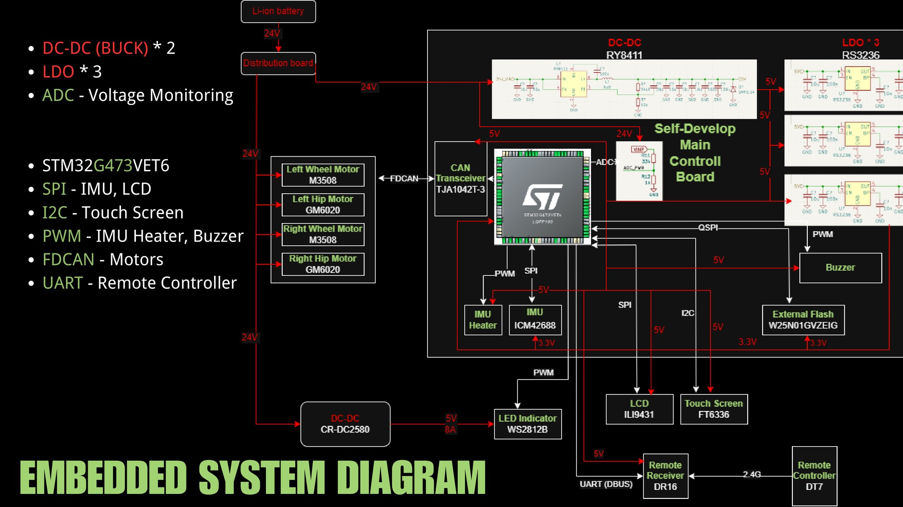
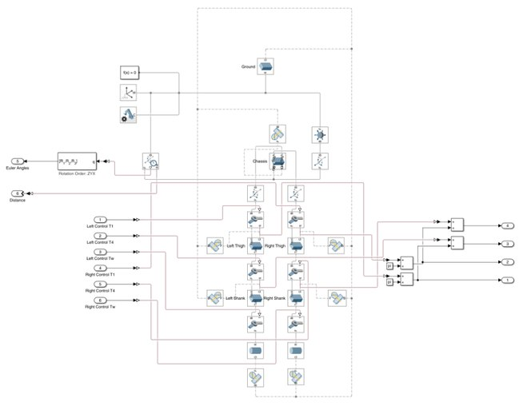
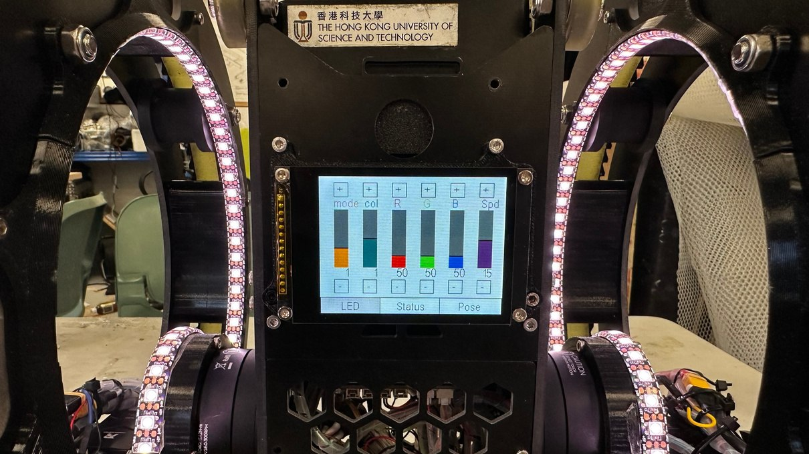
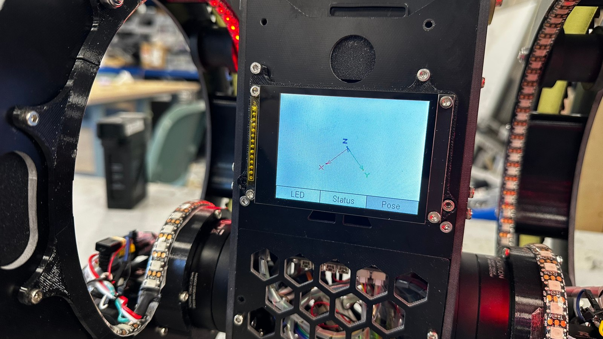
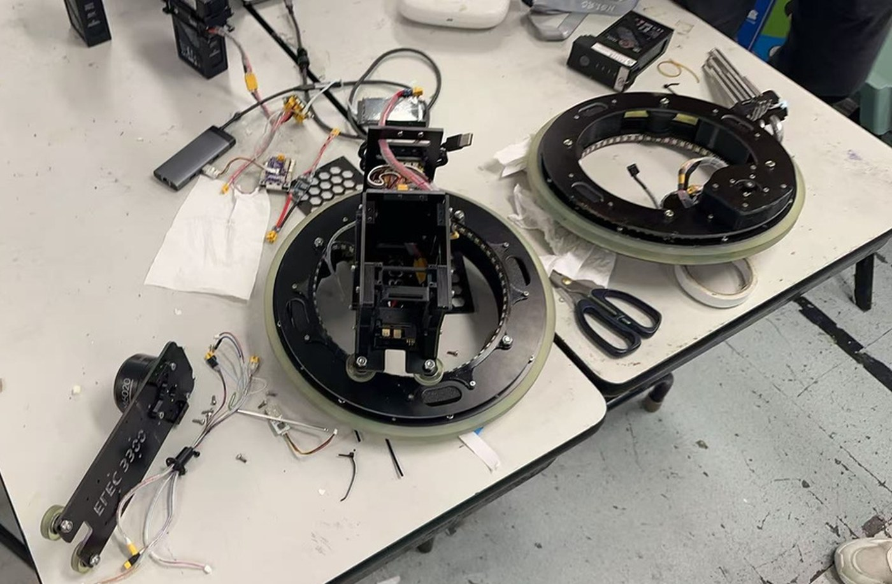
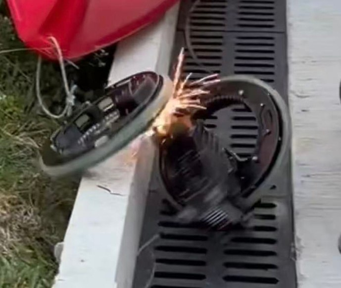

Circle Leg
A wheel-legged robot that balances and drives on two hub-motor wheel-legs — my final project for ELEC-3300. I did the full stack myself: structure design and manufacture, a self-developed main control board, and all of the firmware.
The wheel-leg configuration references the design of invention patent CN202311348645.X.


Hardware — custom control board
The robot runs on a main control board I designed from scratch — schematic, PCB layout, and manufacture — around an STM32G473:
- 24 V Li-ion battery, two DC-DC buck converters and three LDO rails, with ADC voltage monitoring
- FDCAN bus to two M3508 wheel motors and two GM6020 hip motors
- ICM42688 IMU (SPI) with a PWM-controlled heater, ILI9431 LCD (SPI), FT6336 touch screen (I2C), buzzer, and external flash
- 128 WS2812B LEDs and a DR16 remote-control receiver (UART/DBUS)


Control & firmware
- Attitude estimation with a Madgwick filter fusing the 6-axis IMU
- LQR balance controller, with the wheel-leg multibody dynamics modeled in Simulink
- FreeRTOS, interrupt-driven real-time tasks; a CAN-manager middleware for motor communication
- Disconnect detection via DMA + software timers, and per-module error handling and recovery

On-board UI
- A small LCD UI framework written from scratch — a 30 Hz display task with partial redraws, and scenes for LED configuration, system status, and a 3D-projected IMU pose view
- LED rings with breathing / fixed / stream effects in static, random, or rainbow colors, all configurable from the LCD




Final assembly in the lab — and a little fireworks show, the day before the final demo.